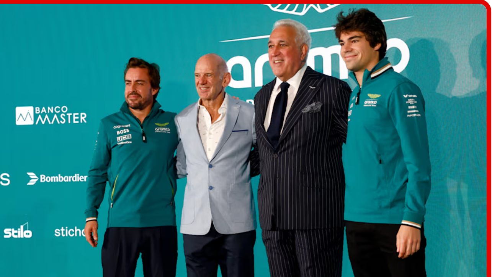

Fernando Alonso on Newey arriving to Aston Martin
After more than 30 years in Formula 1, winning a combined 25 Drivers' and Constructors' titles with Williams, McLaren and Red Bull, legendary designer Adrian Newey has signed a multi-year deal with Aston Martin. Following months of rumours about what Newey would do next after departing Red Bull, it was confirmed on Tuesday that the 65-year-old will become the Silverstone squad's Managing Technical Partner and a shareholder in the company from March 2025.
“I was talking with Lance a few weeks ago [about] the incredible opportunity we have to witness and to work with Lawrence and with everyone in Aston Martin, which we are definitely learning a lot of things [from], on track and off track as well, and it’s part of our growth.”
“I would say he was an inspiration,” Alonso said of Newey, referencing the many years they have worked in rival teams. “I think, thanks to Adrian and his talent and cars, we all got better as drivers, as engineers, as teams. We all had to raise the bar thanks to him, to be able to compete. “I think [it’s] an incredible day for the team. Lawrence’s vision is taking shape with this [new] building, with Adrian, with [future engine partner] Honda, with [strategic fuel partner] Aramco, with a new wind tunnel… Definitely the team of the future, I would say.”
The two-time world champion continued: “For me, it’s going to be an incredible opportunity, professionally, to work with Adrian and to keep wearing this green colour, which I’m very proud to be part of. “I was talking with Lance a few weeks ago [about] the incredible opportunity we have to witness and to work with Lawrence and with everyone in Aston Martin, which we are definitely learning a lot of things [from], on track and off track as well, and it’s part of our growth.”